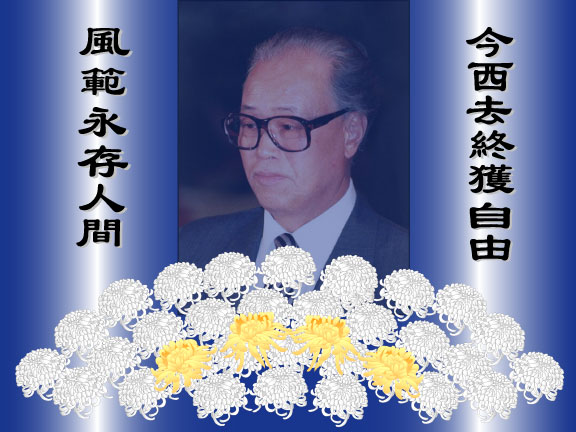
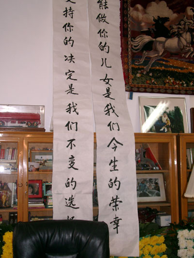

Triệu Đại Triệu 19/3/05 — Từ RENMINBAO.COM
Tôi mang cùng họ với ông Triệu Tử Dương, cố Tổng bí thư ĐCSTQ (Đảng Cộng Sản Trung Quốc). Có lẽ chúng tôi là bà con 500 năm trước đây.

Ông Triệu Tử Dương
Sau khi Ông Triệu mất vào ngày 17 tháng 1 vừa qua, con gái ông là Vương Nhạn Nam đã nói: “Vậy là cuối cùng bố tôi đã được tự do.”
Vài ngày trước đây, tôi đã có một giấc mơ. Nó rất lạ, về việc ông Triệu thoái xuất khỏi Đảng Cộng Sản Trung Quốc. Giấc mơ rõ ràng đến mức ngay cả bây giờ tôi vẫn không thể nói được là mơ hay thực. Trong giấc mơ, ông không yếu như những ngày cuối đời, và dường như trẻ hơn nhiều so với tuổi. Tôi mừng lắm, nói: “Cuối cùng ông cũng tự do.” Ông đã không vui như tôi mong đợi. Ông trả lời: “Thực ra tôi vẫn chưa được tự do. Nếu ông giúp tôi, tôi mới có thể thực sự tự do. Ông giúp tôi nhé?”
Tôi đã rất hãnh diện: “Tất nhiên, nhưng tôi có thể làm được gì?”
Ông Triệu nói: “Giúp tôi công bố thoái đảng. Giải trừ tất cả những quan hệ và thệ ước trong quá khứ của tôi với cộng sản!”
Tôi chợt nhớ ra là các phương tiện thông tin từng báo cáo rằng Ông Triệu đã thông báo từ bỏ đảng cộng sản hai lần trong thời ông bị giảm lỏng tại nhà. Tôi bèn hỏi: “Không phải ông đã yêu cầu thoái đảng rồi sao?”
“Lúc đó tôi đã chờ Đảng chấp thuận việc từ bỏ, bây giờ đây là công bố thoái đảng của tôi: Hoàn toàn cắt đứt quan hệ với ĐCSTQ. Đây là hai việc về bản chất là khác nhau.”
“Ông thấy chúng khác nhau thế nào?” tôi ngạc nhiên hỏi.
“Tôi thấy những người xung quanh tôi đã bị đánh dấu bởi dấu của con ác thú đó trên trán họ, và con dấu đó biến mất khi ai đó giúp họ công bố lời tuyên bố thoái đảng. Bây giờ trên trán tôi vẫn còn con dấu đó. Con gái tôi nói rằng tôi đã tự do, nhưng nhìn từ không gian bên này tôi không thực sự tự do, vẫn thuộc về đảng cộng sản cai quản!”

Con gái ông Triệu viết:
Quyết định ủng hộ cha chính là lựa chọn không đổi thay của chúng con
“Tôi chắc chắn sẽ giúp ông. Nhưng ông nghĩ thế nào về việc yêu cầu tôi?”
“Tôi biết là những gì ông đã hứa làm, thì ông sẽ cố gắng làm tốt,” ông mỉm cười trả lời.
“Tại sao ông không bảo con ông làm việc này?”
“Chúng khó có thể thực hiện được. Nhưng khi chúng biết được tin này, chúng sẽ biết phải làm gì.”